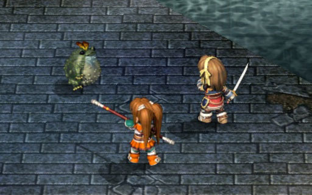
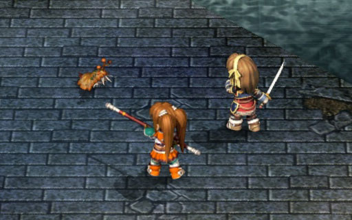
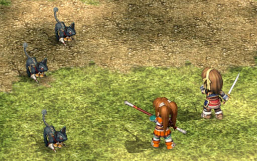
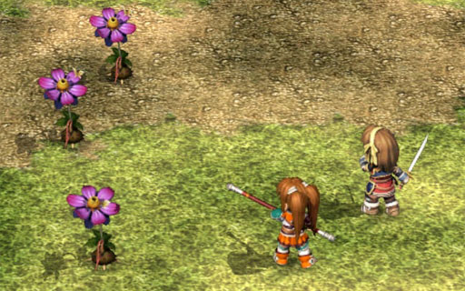
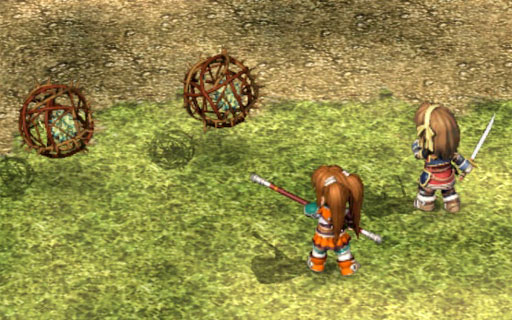
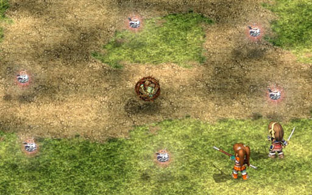
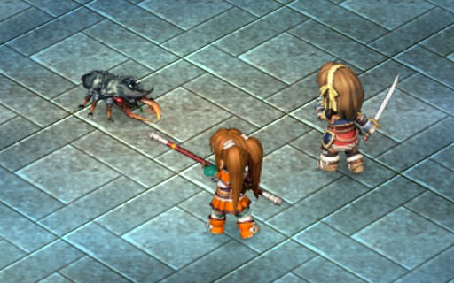
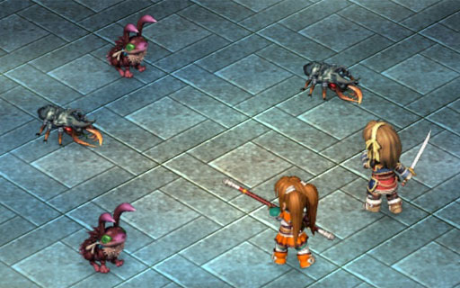

The frog is the only monster that you might need to worry about in the sewers. In my gameplay, it seems that only Anelace is able to do (some) damage to it. Estelle should stick with casting spells (fire does double damage).



As the name says, be careful of the plant's poisonous attack.

These monsters will self-destruct when they die, damaging anyone in the blast radius, which makes these monsters really good for farming CP.
Take note that Estelle will not take damage from self-destruct under normal circumstances; this is because 1. her stick allows her to attack from a distance (RNG 2) and 2. her attack knocks back the monster by 1 square.
If you need to farm Estelle's CP, probably the best way is to move her beside the monster and either have her cast a spell, or have Anelace do the attack (then you can raise both characters' CP).

These monsters randomly appear in battle in various formations (one of the best ones is when SIX of them appear).
At this point in the game, the only way to defeat them is to use S-Craft attacks, and when your CP is at the full 200 for extra damage (or have two people use their 100 CP S-Craft attack).
If Kurz gave you Luck, you can also put it in the same line with Heaven Eye to be able to cast Dark Matter ( x4 ). It's slightly more difficult (but still do-able) because the Pom might run away before you're able to cast it a second time.
They give a crapton of experience; even killing just one Pom is enough to gain a level.


Just a standard monster. I normally take these out first since I believe their attack has a chance of causing your character to faint.